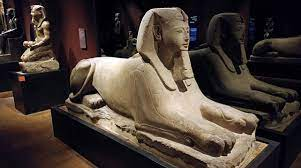

Turín es una de las ciudades más misteriosas y fascinantes de Italia. Rodeada de montañas y colinas y rica en parques, la primera capital de Italia encanta al visitante: palacios barrocos y arquitectura contemporánea, colecciones de arte antiguo y reseñas de películas internacionales, el segundo Museo Egipcio del mundo por la importancia de los hallazgos y el innovador Museo de Cine, equipos deportivos de fama mundial y las residencias Saboya, patrimonio de la UNESCO, que abrazan la ciudad.
Sin lugar a duda, saber qué ver en Turín es primordial para dedicarle más de un día. A través de esta página web, os mostraremos múltiples razones y una mini guía para saber qué hacer en Turín en dos días o tres.
El pueblo celta, fue llamado "Taurasi". En el siglo XVI, gracias al Tratado de Cateau-Cambrésis, Turín se convirtió en la capital de la dinastía de los Saboya. Se iniciaron trabajo que se artística y urbanística de la ciudad para elevar su papel como capital de Saboya. Se construyeron las murallas y la ciudadela, se comenzó la construcción de la Contrada Nuova. El pueblo comenzó a asumir su aspecto barroco.
Fontana Merz en TurínTurín se convierte en virtud de Carlo Alberto y Vittorio Emanuele II, las principales ciudades del Risorgimento. En 1861 se convirtió en la capital del nuevo reino de Italia, luego se trasladó a Florencia, primero, y luego a Roma. A la vuelta de 900 vidas de un gran impulso a la ciudad se convierte en una capital económica e industrial del mundo.
En 1899 viene la fábrica de Fiat de Lingotto se construyen y Mirafiori. Tras la Segunda Guerra Mundial La ciudad ve un fuerte flujo de inmigrantes del sur de Italia y el aumento de la población ha conducido a un desarrollo desordenado de la construcción. Hoy en día Turín se caracteriza por sus arcadas Que se extienden por 127 km, desde su arbolado avenidas, de residencias de los Saboya y de los palacios libertad. La Universidad Politécnica de Turín es uno de los más grandes del mundo. El centro de las actividades que giran en torno a la investigación, diseño industrial, la cultura, el arte y el turismo, y el cine.
|  |